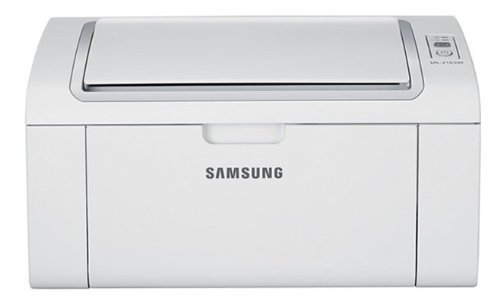
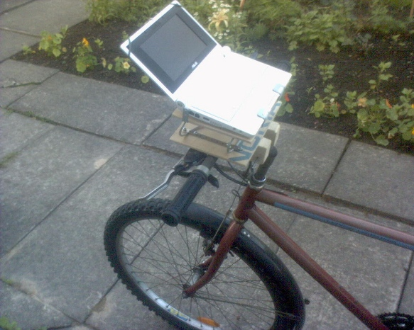
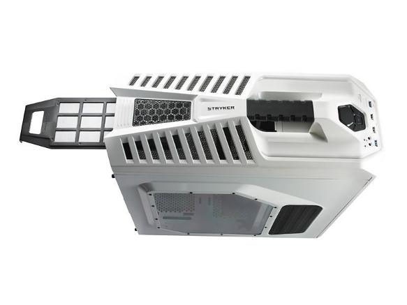
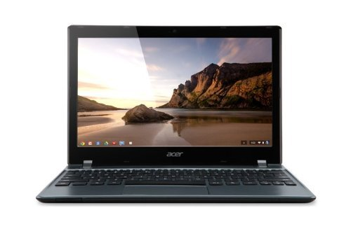
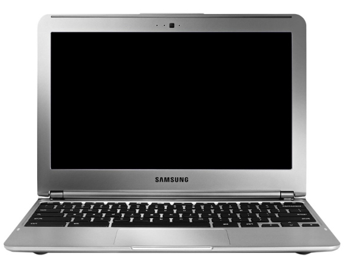
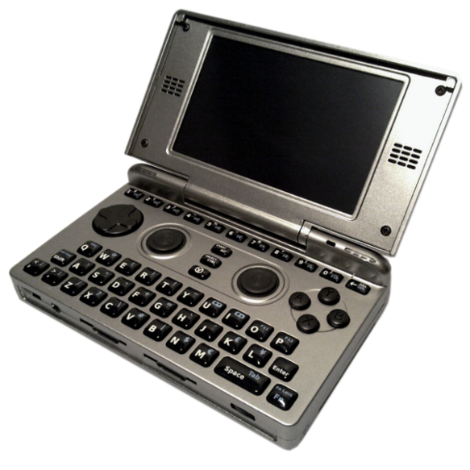
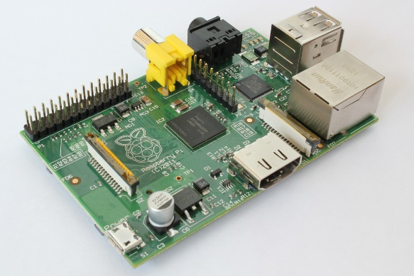
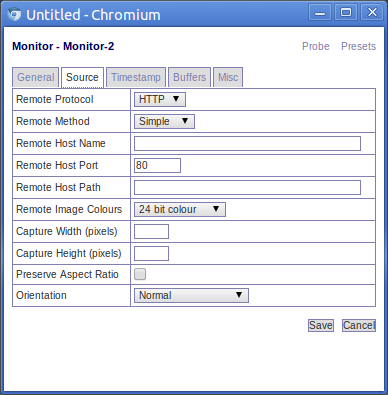
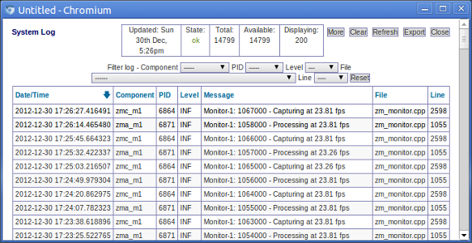

Ubuntu on Macbook Pro Retina
Yesterday I installed Lubuntu on the Macbook Pro Retina 13 inch. (MacBookPro10,2). I am going to talk about it here. It will be useful for installing normal Ubuntu, or other Linux based distribution on this model of laptop. At the level of hardware support, all flavours of Ubuntu are the same, regardless of the desktop environment.
There are some dire posts on the web saying installing Ubuntu on this machine is impossible. This is not true.
Installing on Macbook Pros are always a bit more involved than PC laptops, partly because Apple is very innovative and always uses the most up to date hardware, it doesn’t seem to care much about compatibility with other hardware or even with its own older products. However, it also does not share its plans or co-operate much, so by the time that the support has got down to the Linux distributions, Apple has completely changed its product line again for the next Christmas.
I found this laptop much easier actually than when my last Macbook Pro come out a couple of years ago, that was a bit of a disaster until support made it into the distributions. I have been using Linux since the late 1990s so I remember some really difficult installs.
Of course it is all relative, it is not as easy as building a desktop of extremely Linux compatible parts (e.g. Intel everything). In that kind of situation, you can put a kettle on, put in the Ubuntu CD and it is finished before you can make a cup of tea. Intel seems to make sure its hardware is supported in Linux before it is released.
If you want that kind of install then, yes, you are out of luck, get a different laptop, maybe one with Linux pre-installed.
Here we are talking more like two hours or so for the install - or longer if you write lots of crap into your blog :)
For this laptop, the main problem is not the install, it is that the desktop environments are not yet geared up for such a high resolution, more on this topic later.
USB Boot
The first hurdle is to make a bootable USB stick. This model of Macbook Pro does not have a DVD drive. Therefore, making a bootable USB stick or bootable USB drive is next easiest thing. I tried two different approaches.
The first and simplest approach is to use the usb-creator-gtk application on an existing Linux system. This is a graphical tool that takes an ISO image which you download from the web (e.g. from the Lubuntu or Ubuntu websites)
The Macbook Pro seemed to be a bit fussy and hard to please regarding which USB sticks it agreed to boot. Best to gather all the ones you own and find one it likes. Before I did my final install, I played about with various distributions on various sticks. I did not notice any particular pattern or reason why some were rejected.
The other approach is to make the bootable USB stick on Mac OS X. This later approach requires a bit more typing but the Mac seems less likely to reject a USB stick it has formatted itself. The Macbook Pro did not refuse to boot any USB sticks using this method, however I did not do a scientific test so it might have just been luck.
Among other things, I tried both Lubuntu 12.10 and the daily build of the forthcoming Lubuntu 13.04. They seemed pretty identical, but it is still a long way until 13.04 is released.
As explained somewhere on this page, the process started with converting the Lubuntu iso into a disk image. I opened a Terminal on OS X (by clicking on the Finder then Applications then Utilities then Terminal), and then performed conversion using the hdiutil command. In my case:
hdiutil convert -format UDRW -o converted-ubuntu.dmg lubuntu-12.10-desktop-amd64+mac.iso
Then I had to use the Disk Utility to re-partition the USB stick to use the horrid Mac OS Extended format. Once I had done that, I used the dd command to copy the disk image to the USB stick:
sudo dd if=ubuntu.img.dmg of=/dev/disk1 bs=1m
That takes quite some time. Check out the article on warp1337 for much fuller instructions.
A note on Mac OS X’s toy file system
I don’t know if they have fixed it now, but in my previous experience, I have found that Mac OS X and its Mac OS Extended format does not defragment itself very well, especially compared to ext4. So after you have run OS X for a long time, the partition will be so fragmented that disk utility will refuse to reduce the size of the OS X partition. In this case the only solution is to reformat the partition and reinstall OS X before you try to install Linux.
If you are buying a Mac with the aim of installing Linux, then repartition the drive as soon as you can. If you want to delay installing Linux for some reason then keep it as FAT or some other generic format (you can get Mac OS X applications that give ext support). If you make it a Mac OS X extended format partition then OS X might start storing files there and will then break or moan once you replace the partition with ext4 or whatever.
Resize Mac Partitions
Now we have to make some space for Linux.
In previous versions of Mac OS X, the utility called “Boot Camp Assistant” would do a lot of the work here, since setting up a partition for Windows would work nicely for Linux too. In OS X 10.8, it wants a Windows DVD to be put in the non-existent DVD drive before it does any work. However, one useful thing Boot Camp Assistant still does is recommend how small you can make the OS X partition, which in my case was 29 GB. So in Boot Camp Assistant, pull the slider around to see what is recommended.
So we need to shrink the Mac OS X partition it and add a new FAT partition, which we will set aside for Linux, this is then reformatted as part of the Linux install. Don’t worry about giving it a swap partition, you can live without it or use a swap file which works just as well.
[Now if like me, you have done it all before in older Macs, be aware. In previous versions, OS X took one partition. Now it actually takes three logical partitions for boot, root and recovery. However, this detail is hidden in the OS X disk utility which only shows one partition, and in the background, re-partitions the root partition and moves the recovery partition along too. I did not realise this and instead of doing the above with the FAT partition, just made free space and let the Ubuntu installer automatically install Linux in it. It kept the first two partitions and gave me Linux root and swap, deleting the recovery partition - frak! Do not make the same mistake, always make sure you have chosen manual partitioning in the installer program - and then double check. If you know how to make OS X put back the OS X recovery partition, please let me know by emailing zeth at the domain name of this site.]
Linux Install
So now all the boring stuff is done, shut down the computer.
If you have the Ethernet dongle, then it is best to plug it in now to an Ethernet connection.
Stick the USB stick in to the USB port and boot to the USB stick by hold down alt (also known as the Option key - but it says Alt on the key!) when you turn it on.
If all goes well, it offers you the choice of Windows! Take that and it will boot the Linux installer from the USB stick.
Choose manual partitioning and delete the FAT partition you made earlier. As said above, don’t worry about swap right now. You can install a swap file later or just forget it. You have 8GB of RAM so hopefully swap will rarely be needed, and a solid state disk does not appreciate it anyway.
rEFIt
Your Linux install finishes, it reboots and ... nothing happens, OS X boots as before without any choice of Linux!
Now you have to install a boot menu. I installed rEFIt as I have done in the past and it worked fine. Then I read that there is the newer rEFInd. I got rid of rEFIt and installed rEFInd and it didn’t seem to work and it was getting boring so I swapped back to rEFIt. Your mileage may vary.
Anyway, now you have three choices on boot: Mac OS X, Linux or some weird emergency prompt.
Choose Linux and Grub boots “in a galaxy far far away”. Yes it is very very small!
The desktop of the Lilliputs
So there has not been a major or minor Ubuntu release since this laptop came out, and unlike some other friendly manufacturers, Apple do not make sure their hardware works with Linux before release (or in fact ever).
However, for now, there is no getting around that this is a very high resolution screen. You have a Linux desktop, but unlike any you have seen before.
There are two ways to work around this high resolution. One is to reduce the resolution in the monitor settings to a lower level, i and it didn’t seem to work and it was getting boring so I swapped back to rEFIt. Your mileage may vary.
The second approach is to fiddle with the settings of the desktop environment to increase the font size and the size of the title bars and menus etc.
I went through all the Lubuntu Preferences menus changing the default font size from 11 to 20. So now I can at least read everything easily. Some of the icons and things are very undersized but I personally hate any visual evidence of the Operating System anyway. I prefer my whole screen to only show my running application, everything else goes away until I call for it. Most of the stock Lubuntu apps (which are mostly GNOME ones) handle this quite well. So far, the only non-bundled app I have got around to installing is Emacs which copes perfectly.
Hardware support
So one of the attractions of this 13-inch model is that it has an Intel graphics card. My old Macbook Pro one had an Nvidia card which needed some proprietary blob and used up the battery much faster than Mac OS X would. The idea was that it would fallback to another chip when on battery, but that feature was not supported when I first installed Linux to it and never got around to looking into it again.
I am not a hardcore gamer, so I always prefer an Intel graphics card over the fiddly proprietary ones. They have a long battery life and tend to just work.
I also prefer a Linux wifi chip but sadly this has some brand new Broadcom chip. So you have to install the wifi driver for it. This is obviously easier if you have the Ethernet dongle we talked about above, if not you will need to download it to a USB stick or something to get it onto the laptop.
Installing the wifi drivers is another few commands. It is explained some way down this page and in this page. Hopefully it will be packaged in the future distro releases.
To get the sound card to work correctly, I needed to open the ALSA config file:
/etc/modprobe.d/alsa-base.conf
And then I added the following line to the bottom of it:
options snd-hda-intel model=mbp101
Other things
That is it really. Only remaining jobs are to remap a key to be middle click and maybe reduce the sensitivity of the trackpad. These are issues of personal taste so I will leave them for now.
This post is a bit rough but I thought it was worth getting it online as soon as possible in case it helps someone.
Samsung Printers on Ubuntu
After installing the Lubuntu flavour of Ubuntu on most of my machines, I then had to remember how to setup the printer. This is a ‘note to self’ post, hopefully it might be useful to other people.
I don’t print a lot. It it easy and cheap to order family photos online or print them at the local photo shop. But when I do want to print (e.g. boarding pass), I want it to work.
That is why I hate inkjet printers, they are so unreliable and fragile, and the cartridges run out very quickly. So a few years ago I bought a laserjet. They cost a little more but actually work.
I did not want a scanner attached to the top. Scanning is much easier with a separate scanner that you can manipulate into different positions.
I wanted something with only a black cartridge and to be as simple as possible. The extra buttons and features are just gimmicks that nobody really wants (and probably are hard to get going on Linux anyway). I didn’t really care about having wifi or ethernet on the printer since it was expensive back then and, as long as the computer that the usb printer it is plugged into is turned on, Linux computers share usb printers very easily.

So I bought the Samsung ML-1915 which fitted the bill and love it. Everytime I see a friend or relative struggling with an inkjet I think fondly of my laserjet :) It once got completely covered in building dirt but cleaned up very well. It is has been a loyal piece of kit.
The world moves on and it has been replaced by more modern and cheaper printers like the Samsung ML-2165. It does not look quite so cool in white but it is half of the price so who cares.
Anyway my printer, like a lot of the Samsung printers, uses the Samsung Unified Linux Driver which for unknown reasons does not seem to be in Ubuntu by default, but it is pretty easy to install it.
Surprisingly enough, the Linux driver did come on a CD that came with the printer but it is easier to use the third party repository maintained at the bchemnet.com website.
Firstly you need to edit the sources list to add a repository, so open the file in your favourite editor:
sudo nano /etc/apt/sources.list
Now add the following line:
deb http://www.bchemnet.com/suldr/ debian extra
Then we need to add the key for that repository:
wget -O - http://www.bchemnet.com/suldr/suldr.gpg | sudo apt-key add -
Then we need to update the list of packages available:
sudo apt-get update
Now we can finally install the driver:
sudo apt-get install samsungmfp-driver
It would be much easier if that package was in the standard repositories but there you go. Now you can just add the printer using the normal graphical tool in your system.
In Ubuntu, this is under “System Settings” then “Printing”. In Lubuntu, this is under “System Tools” then “Printers”. Or you can just put system-config-printer into the terminal.
Netbooks in a tablet world
The Guardian is ringing the death knell on the netbook. I would tell the story a little differently, so I will.
In the beginning was the $100 laptop dream
Before 2005, there were not many small factor laptops. I had the smallest Thinkpad, which was merely a smaller version of any other Thinkpad, which had a high end processor and lots of RAM, and it cost quite a bit back then. $1000-2000 dollars was the typical price for a laptop, and due to economies of scale, the then standard 15 inch screen laptop was always the cheapest model, smaller and larger sizes were a bit more expensive.
In 2005, the OLPC (One Laptop Per Child) X1 was announced - a $100 laptop aimed at children, with a special low power processor from AMD, running a version of Fedora Linux, with suitable proportions for a children. The X1 included a video camera, touch screen, sd card slot and wifi; features that were considered high end in 2005.

The dominant computer companies had a collective nervous breakdown at the mere concept of it. While everyone appreciated the new and noble idea of OLPC, the existing market leaders were extremely hostile to it. Microsoft lobbied departments of education around the world, telling them that if they bought their children non-Microsoft devices then their future careers would be ruined forever, etc, etc.
Meanwhile Intel did something a little more positive in that it dusted off its shoes and worked with hardware manufacturers to get Intel powered devices to the market. The first was ASUS with its educational “Classmate PC”, and the consumer oriented counterpart the Eee PC.
Until this point, the trend of processor manufacturing was towards increasingly more powerful (and hungrier) processors. Intel didn’t even have a suitably efficient chip so it under clocked its lowest laptop processor from 900 MHz to 630 MHz. Later it would get its act together with its Atom chip, but a little late as ARM based chips had already gotten most of the market.
Nobody cared about the Classmate PC, but despite the stupid name, the Eee PC was a big hit. Despite the bizarre 1980s style border around the screen, the early 701 series models were great, they had solid state drives and cost around £200. They were also light enough to use while holding them up, unlike the bulky laptops a lot of people still had back then.

It might not sound it like it now, but in 2007 it seemed really cool that with a netbook, you did not bother with a specialised multi-pocket laptop bag, it was not a chore to throw it into your backpack and keep it with you at all times. If the worst came to the worst and it was lost or stolen, £200 is rather less of a shock than £1000-2000.
Meanwhile, the OLPC project has had some solid achievements, and 2.5 million kids using the XO laptops, but the initial excitement and the wide coalition of support faded out, and it has not yet managed to overcome the political and monopolistic obstacles to a global roll out. It also never got into the required production volumes to be exactly $100 per unit. If you are a department of education, especially a developing world country, $100 per child is already a lot, a $200 dollar laptop for each child proved to be out of the question. [They always seem to have enough money for military jets and nuclear programmes though!].
This is is a shame because the Sugar interface is a fantastic learning tool for children. Maybe its time is still to come. They are trying to pull everyone back together for the launch of the new iteration, the XO-4, sometime this year.
Netbooks and dodgy Linux pre-installs
A lot of other manufacturers brought out ‘netbooks’, we were given an Acer Aspire One by a relative, and some of them, including the Eee PC, came with Linux. What I have never understood about netbooks, is that they always came with an unknown and slightly crap form of Linux, with almost no decent applications on them.
In the wider desktop and laptop markets, Linux users tend to install Linux distributions as an after-market upgrade, sidelining or wiping out completely the redundant copy of Windows install that came pre-installed with the computer. It is an extremely competitive market; at the time of writing this article, the DistroWatch website lists 314 currently available Linux distributions.

A lot of these are hobbyist or specialist efforts, but out of this whirlwind come a handful of really big ones, that the majority of Linux users actually have installed. Ignoring distributions aimed at technically proficient users such as Gentoo, Arch, and Slackware, the big ones include Ubuntu, Fedora, SuSE, Debian, Mandriva and Mint.

These are all free, so why didn’t the netbook manufactures install these? They have a proven track record of usability and popularity and existing teams working on improving them. If Ubuntu alone has 20 million users already, then why not sell what these people want? The highly innovative world of Linux, with things constantly forking and splitting, probably does not make it easy for manufacturers, but the big brands like Fedora and Ubuntu are pretty stable participants. Fedora’s backer Redhat had its famous IPO in 1999 and is a S&P 500 company.

I have no idea why laptop manufacturers and the big Linux distributions have not done a better job at working together. Of course, there is obviously a massive obstacle in the entrenched Windows monopoly and the marketing budget that Windows gets from its monopoly profits.
Small companies who pre-install Linux on computers as a boutique service for time-poor Linux users are not readily assisted by the manufacturers of the laptops. Dell had a half-effort at selling Ubuntu laptops, but not in the UK, maybe that will increase. Canonical now seems to be having some new efforts on working with manufacturers with regard to tablets so we will see how that pans out.
In the mean time, what people commonly call “Real Linux” distributions have been completely overtaken by the rise of Android, as we will come to shortly.
2007-2010 - The short reign of the netbook
Despite some promising signs, the netbook boom ended pretty quickly. I agree with the Guardian article on that to a certain extent.
As the Guardian points out, the first major blow was specification creep. The computer hardware industry’s habits would not die easily, and they soon watered down the concept. Instead of a small fast portable computer with a web browser, simple fast applications, no moving parts, and costing £200, they soon reverted to type: to make Windows and its accompanying bloatware perform decently required better hardware, regular hard drives replaced solid state storage, whirring fans came back, battery run times collapsed, and they soon crept back up to £300-400.

Going further than the Guardian article, I would add here that the second and more important blow was a lack of software innovation. Microsoft worked hard to make sure Windows got the lion’s share of pre-installs, but it did not attempt to do anything innovative in the netbook space. It provided either the dated Windows XP (launched in 2001), or a crippled version of its later systems. It did not attempt to create software relevant to a low powered portable device. So the majority of netbooks were sold with software not particularly designed for it.
The third and fatal blow was the launch of the iPad in 2010, and then the arrival of even better Android tablets. A lot of computer users are passive information consumers, and short form and asynchronous interactions of the social networking boom are not inhibited by the lack of a physical keyboard. Unlike netbooks, tablets managed to free themselves from the Windows baggage and have specially tailed operating systems.

Tablets and phones fatally bisect the netbook market; occasional and light users can just use tablets and phones, professionals can afford the $1000 small factor laptops, ‘Ultrabooks™’ as Intel calls them.
However, I think the fact that netbooks were sold with unsuitable Windows operating systems was the biggest factor. I think with the right tailored software, netbooks can be useful tools.
The rise of Android and Chrome
While the “Real Linux” distributions were mostly ignored by the manufacturers. In an act of genius that we almost have come to expect from Google as a matter of routine, it got the concept of commodity computing and used it as a way to increase usage of its own services. Android and Chrome are technically Linux, but all the common applications are replaced by Google’s own offerings, and whatever crap the manufacturer adds on.
Long time Linux users were initially not impressed they could not easily use their existing applications and the fact that it launched with a Java only development environment alienated a lot of C and Python developers on the Linux platform who felt lobotomised by it. Over the last five years, the Linux community has mostly come to terms with Android.
Android is the most successful distribution in the history of open source software. Don’t get me wrong, I like it a lot, I have Android devices and I love them in their own way, but it is not want I really want for my primary computing device. This would take another whole article to explain but Android is Linux but with all the joie de vivre, the joy and enthusiasm, sucked out of it. Also, I still it is relatively early days in open source software, the big game changing Linux device has not been invented yet.

Here is where I have to really depart from the Guardian article, they claim that no netbooks are being released. Well I think that must be a pretty narrow definition of a netbook.
Chromebooks, netbooks with Google stuff preinstalled rather than Microsoft’s, are the second incarnation of netbooks. Because Chromebooks use a special BIOS and bootloader, it is currently a bit of a faff installing your own Linux distribution, but it is possible and hopefully it will get easier over time if the distros find some easier way of installing on Chromebooks.
So from the perspective of a Linux user, despite the initial faff, Ubuntu on an Acer Chromebook is little different than running Ubuntu on an Acer Aspire. For me Chromebooks are still netbooks.
Netbooks will not die
For me the netbook format is still relevant and will not die (yet at least).
Tablets are like small babies, you have to hold them all the time, I haven’t mastered the art of propping the iPad up. Even bespoke stands are never around the moment you want to put the tablet down. Giving a presentation from a tablet or a phone not only requires being very organised - it is hard to make last minute changes from a tablet, it is also quite expensive to get a VGA connector for them (and you have to not lose it).

I know it is not trendy, but sometimes you just want to use physical keys. I do have a very nice bluetooth keyboard for my Android powered Samsung S3, but Emacs does not work very well on it, it is not ported very well and Android’s own features try to take over. Although I will hopefully get over some of these problems over time.

At the moment I am very lucky to have a high end laptop due to the nature of my job. However in general, I am a desktop type of guy. I like buying the components and screwing them together. I like being able to stick more RAM in later when it becomes cheaper. I like being able to scavenge for spare parts and turning three broken machines into two working ones. I like two full sized monitors.
I hate it when expensive laptops break, in general these are not fixable at home and have to be sent away, which can be as expensive as a netbook, but is also inconvenient being without it for several weeks.
For me a netbook is a very nice complement to the desktop/home media server type setup. It works enough offline, and with a good connection I can use the full power of my home desktop remotely. If it breaks it is less of a problem, being £200 to replace.
Chromebooks
Lets have a look at some Chromebooks.
The cheapest current Chromebook seems to be the Acer C7 Chromebook which at $200 and £200 is a pretty unfair currency conversion, it certainly one to buy while in the US, or perhaps have posted from a US seller if you are not in a hurry. I like the fact it has VGA (for projectors) and HDMI (for TVs) and still has an ethernet port (for plugging into a wired network) which is rare this days. It is not lacking in power with an over-generous 2GB of RAM. It has a massive 320GB old fashioned hard drive, which you will either love (lots of storage and less fear of disk corruption) or hate (it is a moving part which can make noise and potentially fail). I personally would prefer a small solid state drive.
If you get through the Chromebook bootloader hassle and successfully get Linux installed, since it has an Intel processor and graphics, it should work pretty well. Intel graphics is a plus since Intel stuff normally works automatically without the need for a proprietary driver (but then I am not a gamer, Linux gamer types always seem to get Nvidia graphics). It does not say what the wifi chip is, if it is Intel too then all the better.
More expensive, but at least with a sane UK price, at $325 or £230 is the Samsung Chromebook. It also has 2GB of RAM but it is slim and fanless with a 16GB solid state drive and bluetooth.
So in many ways it is a better machine than the Acer but it is ARM, which is the trendy thing but there is no support for hardware accelerated graphics at the moment for Linux on this ARM chip and some proprietary software might not work either if it does not have an ARM binary, if you rely on Skype or Flash or something, you might want to check if these work on ARM. However, Michael Larabel of Phoronix has reported good things about it.
Both seem nice but neither are the perfect netbook.
Less is more
Fundamentally, I think these are still too high expensive and in that sense, netbooks have not really begun yet.

Of course when compiling software or doing video editing or whatever, one still wants the best computer possible. However, If I was designing a netbook, I would accept that in 2013, you are likely to have many computing devices - phones, tablets, smart TVs, desktops and games consoles and so on. I would explicitly make it good at being a cheap portable laptop you sling in your backpack.
The ‘Zethbook’ would be a small factor laptop with modest (32GB or 64GB) solid state drive and preferably no fans or other moving parts, with no more than 1.0 GHz processor, and no more than 1GB of RAM, preferably with Intel graphics or some other Linux supported chipset.
The Zethbook could then be incrementally improved in other ways that do not involve unnecessary bloating up the cost and power usage, as battery technology improves but the processor stays the same, why not 100 hours of usage? Why not 1000 hours? Make it sandproof for the beach, make it waterproof so you spill a whole glass of soda over it or use it in the shower. Make the keyboard better, improve the screen resolution, make it more user modifiable. Improve the shock resistance so it can cope with being accidentally dropped open with the screen hitting the floor first, let it be bike proof and fall off the handlebars at 20 mph and hit the road without damage. Let it fall out of a car window at 60 mph.
It is great that computers get more powerful every year, but I think it is a bit too one-sided. The international Space Station runs on the 386 processor which was brought out in 1985. The Linux kernel and GNU GCC compiler are now starting to remove support for it now, but the 386 is still (in theory) usable with Linux for a while longer. Going forward in time, with an efficient choice of operating system, 95% of things can be done on a Pentium 4 computer from 2000. It is just lazy programming that requires bloated systems all the time.
Sadly you won’t see the Zethbook any time soon. Boards aside, the OpenPandora (warning: linked web page has sound) is the nicest complete Linux device I have seen so far, it is a handheld game console costing over $500. It is not that easy to get the price down without being made by the biggest manufacturers like Asus, Acer or Samsung etc.
The Raspberry Pi Model B is perfectly usable at 512 MB and 700 Mhz (twice as powerful as the original version of the OLPC XO). The Raspberry Pi Model B is $35. Granted it does not have a keyboard (cheap) or a screen (expensive) or wifi, but we can still imagine a portable device for $100, which of course, is the OLPC dream that started the netbook story. I am quite interested in those who are putting the Raspberry Pi in home made mobile forms and may follow that up in a future post.
Let me know your thoughts on netbooks. Do you love or hate the netbook. Will you miss its passing if it does die out? Do you like or hate the idea of Chromebooks?
Zoneminder on Ubuntu
Ever thought about building your own CCTV system? All you need is free and open source software Zoneminder, a free Linux distribution such as Ubuntu, Lubuntu or Debian, an old PC and a camera.
What is Zoneminder?
Zoneminder is an open source application used for CCTV and other security and surveillance applications. You can use it to monitor your home or work property or to monitor your pets while you are out, whatever you can imagine really (look at the screenshots on the Zoneminder homepage for more ideas).
The implementation is basically a Perl/PHP web app using Apache and MySQL (LAMP as we call it in the trade). If you have ever set up a website or blog or something then you will understand it instantly. It is a nice concept as using shared nothing web application and system administration principles it can scale up indefinitely to very large commercial uses.
If you are the kind of person who already has a home wifi or wired network and a home server or desktop on all the time, then Zoneminder will fit in great, as the only extra electricity you will be using will be the camera (or cameras) themselves.
Zoneminder is really flexible and configurable, which is fantastic but also means that you do have to configure it for your own needs. If you have quite a minimalist IT setup at home with no machines running most of the time (e.g. just a iPad in your Thames-side studio apartment), then using Zoneminder at home might be overkill, as you can probably buy a pre-made embedded home CCTV system that runs off a single plug and does not require configuration.
Zoneminder stores the recorded video as single frame images in a simple data layout on your filesystem and the web application allows you to configure it and view the cameras in real time and view recorded footage. The metadata is stored in the MySQL database.
What kind of camera do I need?
It seems you can use anything. If you have a simple USB webcam lying around at home, that is all you need to get started. If then you like Zoneminder you can then get a posher camera later if you want.
There different types of cameras depending on how serious you are. The more serious people put a card in their computer (such as the Hauppauge Impact VCB/PCI Composite AV Input card ) and use real high definition video cameras.
I personally use a ‘netcam’ (I have the model called TRENDnet SecurView Wireless N Internet Camera if you want to be precise) which is basically a webcam with a built in wireless card (and or ethernet socket). So you can put the camera anywhere you can power it and it will log onto your wireless network like any other device. You don’t have to run AV cables back to your computer.
[The same advice that I always give concerning routers and other network devices applies here: if you buy such a netcam, check its website for any firmware updates, especially security updates, before you add the device to your network. These things are little network connected computers after all, containing a proprietary operating system. This system may have been written by a guy with a masters in network security from MIT, or it could have been written by a subcontractor earning £1 per hour in who knows where. The problem with all proprietary software is that there is no public peer review (unlike with open source software). So check the vendor for security updates.]
If a burglar manages to get in and picks up the netcam, there are no wires to follow back and so no clue as to where the images go. One can also use backup software or write a few bash scripts to copy images to a remote server or the cloud if you are in a high crime area. If you have a really good internet connection at both ends, you can put netcams in your relatives’ houses and allow your Zoneminder server to grab the images off.
What kind of server do I need?
By ‘server’ in the article, I just mean the computer that will have Zoneminder installed, as opposed to any other computers, tablets, phones or even TVs you might use to operate the system on a day to day basis.
I suppose (in theory) you could use any operating system that can run Perl, Apache and Mysql. However, the assumption from here is that you will be using a Linux distribution, because Windows and OS X are, to put it bluntly, completely crap in this server role and a massive hassle to work with. If you have a Linux Desktop already at home, then that will probably work fine.
In my experience, the server does not need to particularly powerful for a simple home setup. I am using a low-powered PC from 2006 which runs Zoneminder and lots of other apps quite nicely.
You don’t have to have a graphical system, you can use something like Ubuntu Server if you want. However, you will need some computer or phone with a web browser to control Zoneminder and view the saved images/video, this does not have to be a Linux computer (toy operating systems work fine as clients).
Source vs Packages
A couple of years ago I installed Zoneminder on Ubuntu 11.04 by downloading the source. Now over Christmas I had a spare 20 mins and re-installed the OS. I like backing up and reinstalling occasionally as it gives a nice clean system. This time I went for Ubuntu 12.10 in the Lubuntu flavour (I will talk about that in the future). Then I had to put all the data and programs back on.
Last time I installed Zoneminder from source, this time I thought I would try the Ubuntu packages. This guide should work for any Ubuntu or Debian type system, but your mileage may vary.
Lets get started.
Firstly, we need to install the zoneminder package, you can do this in the graphical “software centre” or you can just open a terminal and use this command:
sudo apt-get install zoneminder
On a fresh system without Mysql, it will ask you to set a Mysql root password. Next it configures the nullmailer mail relay, I just accepted the default answers. Then it stops returns control of the shell.
Apache settings
Now we need to let Apache know what is going on. If you are already using Apache to show websites on this system, you can integrate Zoneminder in a way that does not clash with your other sites.
However, on a fresh system, you can do this:
sudo ln -s /etc/zm/apache.conf /etc/apache2/conf.d/zoneminder.conf
sudo /etc/init.d/apache2 reload
Now when you go in your web browser to http://localhost/zm/ you can now see the console.

If you have installed Zoneminder to a non-graphical server distribution, then obviously use the IP address or domain name instead of localhost when you access Zoneminder from your external computer or phone or whatever.
Camera Setup
When you click on Add New Monitor, you get a web form that looks like this:

The most important field here is “source type”, the setting chosen affects the options available in the source tab (see below). Since I am using a netcam, I set it to remote.
Another important field is ‘Function’. Modect is short for ‘motion detect’, it records when there is motion, other options include constantly recording and just monitoring without recording.
Now we come onto the source tab, as shown below:
This window allows you to define the hostname of your camera. So for a netcam we give it the host name of the camera, which in a home setup will probably be a private ip address (e.g. 192.168.x.x). Look up your camera on the Supported hardware section of the Zoneminder wiki to find what settings you need to add here.
Log driven configuration
You can read the Zoneminder ‘system log’ by clicking on a link unsurprisingly called ‘log’ (as shown in the main console screenshot above). This gives as a log viewer, as shown below:
The way I configure Zoneminder is by reading the activity log and keep changing configuration until it stops moaning.
So I started with this error:
Can't open memory map file /dev/shm/zm.mmap.1, probably not enough space free: Permission denied
This due to the default settings of Ubuntu (or Lubuntu in my case). There is a kernel setting called shmmax which determines the maximum size of a shared memory segment i.e. the total amount of RAM that can be used when Zoneminder is grabbing images from the video driver.
[You may vaguely remember doing this before because some ‘enterprise’ (i.e. bloated) databases and other business software often requires this too.]
So on my fresh install, shmmax was set to 32MB by default and it needed to be more than 96MB, so I increased it to 128MB to be sure.
How much you need depends on how posh your camera is. The higher resolution the camera, the more RAM Zoneminder will need to use.
A quick hack way is to just override the number in /proc, obviously this only works on the live system, when you reboot the setting is gone. However, it is a quick way to play about with the setting:
sudo su
echo 536870912 >/proc/sys/kernel/shmmax
exit
You can work the setting by trial and error but you can also just to look in the Zonemaster wiki, or to google it, as it is likely that someone else is already using Zonemaster with the same model of camera you have.
I restarted zonemaster:
sudo /etc/init.d/zonemaster restart
And it solved the problem. So because I then knew it worked, (as advised by Zonemaster wiki), I made a config file to do this on boot:
sudo su
echo kernel.shmmax = 536870912 >/etc/sysctl.d/60-kernel-shm.conf
sysctl -p
exit
Next up in the log was the error:
waiting for capture daemon
This is fixed by adding the web server user to the video group:
sudo adduser www-data video
(Why isn’t this sorted out by the .deb package? And why is it not given its own user?)
Just keep attacking the log errors until it is all happy really.
Configuring Image Location
By default the images are bunged into: /usr/share/zoneminder/events which is a symbolic link to /var/cache/zoneminder/events/1/
In theory, to change this you need to change the setting ZM_DIR_EVENTS which is the first setting under ‘Options’ then ‘Paths’. Use an absolute path and make sure the destination has the correct permissions.
In reality, I never had much luck changing this. When it tries to read the events back, it seems to be somehow hardcoded to the old location which is then appends with this location. If anyone has the answer to this let me know.
So instead I have had more luck just ignoring this configuration option and instead myself replacing the symbolic link /usr/share/zoneminder/events with my own:
sudo rm /usr/share/zoneminder/events
ln -s my_better_location /usr/share/zoneminder/events
By default there is no lockdown on the web interface, so if the machine is web accessible, you will want to change that (options > OPT_USE_AUTH). When you first turn on authentication, the username is admin and password is admin. You will probably want to change that too! (Options > Users - only appears when authentication is turned on).
There are lots of other things you can configure like the sensitivity of the motion detection and which regions of the image to watch and which to ignore it etc. However, we have covered everything specific to using Zoneminder on an Ubuntu/Debian system using the .deb packages. The Zoneminder wiki is very useful and comprehensive so dig around there to find out more.
Zoneminder in action
Now if you have read this far you deserve to have some silly pictures.
Having a CCTV camera at the front of your house educates you a lot about what happens in your local community. I have learned all sorts of things from watching back footage at random. Most of the cool snaps I probably cannot post online for legal and taste reasons.
The first revelation is that a large amount of people look through your windows. Here is a fairly tame and blurry one.

I have had people come right up to the camera and look through the windows. One person even wrote down details in a pad.
Where does the box load of paper spam come from? Well Zoneminder will tell you. Here is a guy promoting a pizza company:

Here is a free ‘newspaper’ full of ads:

Fortunately, we still have real postmen. But they seem to be far more informally dressed than Postman Pat:

I think he was a special temp over Christmas. Sadly they all seem to have these granny trolleys now instead of the cool Pashley bicycles they used to have.
Fortunately, the dustmen come and take all this rubbish away, even in heavy rain:

Over to you
So setting up Zoneminder takes a little fiddling but it is good fun and reassuring to have the ability to look back in time at what was happening in front of your house in the past. If you have a go or have tried Zoneminder before, please let everyone know how you got on and how I could improve this guide. Bonus points for silly pictures.
You can’t stop the signal
When I started this site in 2005, I said that my blog was:
“about taking control of your own technology, it looks at our experiences of computing; especially computing using GNU/Linux, often using the command line and other textual means, but also other issues such as ethics, best practices and whatever is cool now.”
In 2007, in answer to a question, I provided this further description:
“The broader meaning is someone who is willing to take the extra time and effort to think through and take control of all the technology that is entering into our daily lives; to make sure that our freedoms, hard-fought for on the battle field, protest rally and ballot box, are not quietly surrendered in the digital age, but instead freedom must be at the very foundation of technology itself.”
About a year ago (December 2011), I decided to take some time off writing here. I thought that if I stopped writing blog posts and stopped writing mailing list posts and stopped Tweeting it would give me more time and energy to make progress in other areas of my life.
I was wrong.
By not engaging with the interests and interested communities that got me where I am philosophically and technically, my passion started to fade and I lost those key insights that only come from interacting with others in the field.
So I have decided to try to restart writing. All previous entries from 2005 to 2011 are now archived, and I have a clean new chapter to begin.
Bear with me as I build up confidence again as a writer. The biggest difficulty I have is writing to a silent audience. It is difficult to know which topics to address if I do not know the audience’s interests. So please do give me your comments and ideas. There is a comment box available below and my twitter name is zeth0.